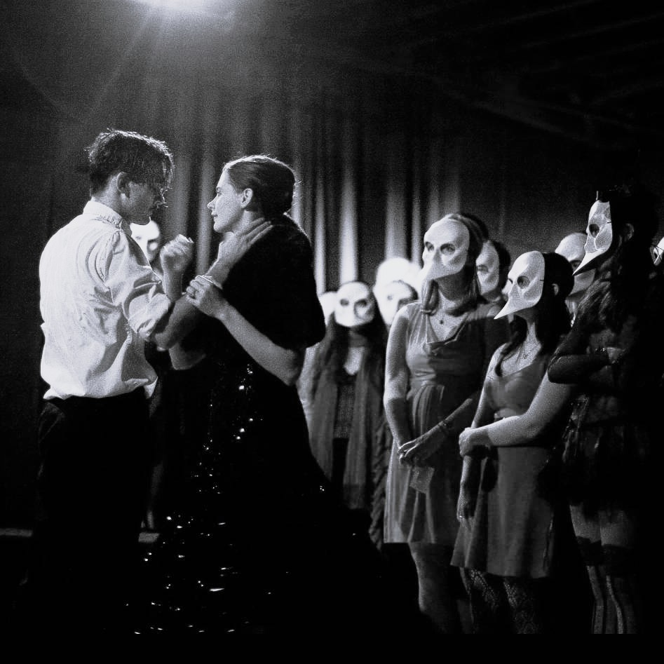
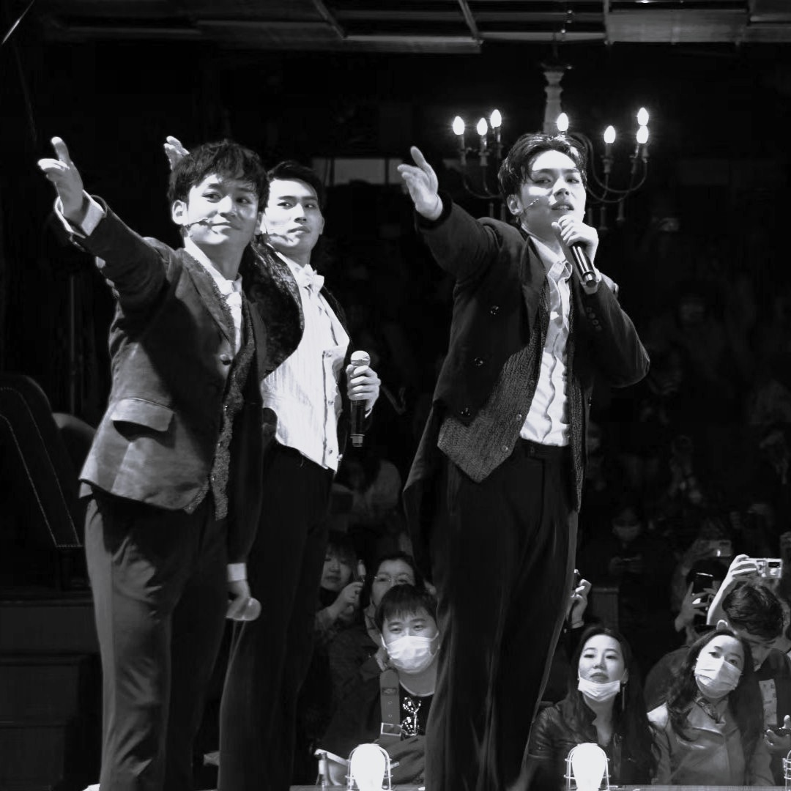

Type 1: Traditional Immersive Theatre
Performances take place in non-traditional venues.
Spaces such as warehouses, factories, or historic buildings are commonly used.
The audience moves freely and interacts with scenes and performers.
Spaces such as warehouses, factories, or historic buildings are commonly used.
The audience moves freely and interacts with scenes and performers.



Type 2: Intimate Immersive Stage
Held in small venues with flexible layouts.
Audience members remain very close to the performers.
The experience often feels personal and direct.
Audience members remain very close to the performers.
The experience often feels personal and direct.